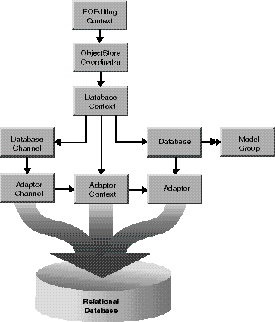

Extends:
next.eo.CooperatingObjectStore
A DatabaseContext represents a single connection to a database server, and it determines the updating and locking strategy used by its DatabaseChannel objects. A DatabaseContext has a corresponding Database object. If the server supports multiple concurrent transactions, the Database object may have several DatabaseContexts. If the server and adaptor support it, a DatabaseContext may in turn have several DatabaseChannels, which handle access to the data on the server.
The relationship between DatabaseContext and other classes in the control and access layers is illustrated in the following diagram.

As a subclass of CooperatingObjectStore, DatabaseContext acts as one of possibly several CooperatingObjectStores for an ObjectStoreCoordinator, which mediates between EditingContexts and CooperatingObjectStores.
A DatabaseContext creates an AdaptorContext when initialized, and uses this object to communicate with the database server.
registeredDatabaseContextForModel, you should rarely need to do so. If you're using the "higher-level" objects EditingContexts and DatabaseDataSources, then the DatabaseContexts those objects need are created automatically, on demand. When you create a DatabaseDataSource (typically for use with a DisplayGroup), it registers a DatabaseContext that's capable of fetching objects for the data source's entities. If objects fetched into an EditingContext (described more in the following section) have references to objects from Model objects that are based on another database, the DatabaseContext creates and registers a DatabaseContext for each of the additional databases.DatabaseContexts are created on demand when an ObjectStoreCoordinator posts a CooperatingObjectStoreNeeded notification. The DatabaseContext class registers for the notification, and it provides the ObjectStoreCoordinator with a new DatabaseContext instance that can handle the request. For more discussion of this topic, see the chapter "Application Configurations" in the Enterprise Objects Framework Developer's Guide.
For the most part, you don't need to programmatically interact with a DatabaseContext. However, some of the reasons you might want to are as follows:
When an EditingContext fetches objects, the request is passed through the ObjectStoreCoordinator, which forwards it to the appropriate DatabaseContext based on the fetch specification or global ID. When the DatabaseContext receives a request to fetch or write information to the database, it tries to use one of its DatabaseChannels. If all of its channels are busy, it broadcasts a DatabaseChannelNeededNotification in the hopes that an observer can provide a new channel or that an existing channel can be freed up. This observer could be a manager that decides how many database cursors can be opened by a particular client.
DatabaseContext knows how to interact with other CooperatingObjectStores to save changes made to an object graph in more than one database server. For a more detailed discussion of this subject, see the class specifications for ObjectStoreCoordinator and CooperatingObjectStore.
objectsWithFetchSpecification method. Named by the key FetchLimitHintKey, the hint's value is a java.lang.Number containing an integer value indicating the maximum number of objects to fetch. Depending on the value of the PromptAfterFetchLimitHintKey (true or false), the DatabaseContext will either stop fetching objects when this limit is reached or it will ask the EditingContext's message handler to ask the user whether it should continue fetching.
objectsWithFetchSpecification method. Named by the key CustomQueryExpressionHintKey, the hint's value is a SQL string for performing the fetch. The expression must query the same attributes in the same order that Enterprise Objects Framework would if it were generating the SELECT expression dynamically. If this key is supplied, other characteristics of the FetchSpecification such as isDeep, qualifier, and sortOrderings are ignored-in that sense this key is more of a directive than a hint.
DatabaseContext doesn't immediately fetch data for the destination objects of relationships, however, since fetching is fairly expensive. To avoid this waste of time and resources, the destination objects aren't initially filled with fetched data. Instead, they exist without any of their values until those values are actually needed. When the "empty" destination object (called a fault) is accessed (sent a message), the object triggers its DatabaseContext to fetch its data.
Faults come in two varieties: single object faults for to-one relationships, and array faults for to-many relationships. When an array fault is accessed, it fetches all of the destination objects and replaces itself with an array of those objects.
You can fine-tune faulting behavior for additional performance gains by using two different mechanisms: batch faulting, and prefetching relationships.
batchFetchRelationship method for doing this. For example, given an array of Employee objects, this method can fetch all of their departments with one round trip to the server, rather than asking the server for each of the employee's departments individually. You can use the delegate methods databaseContextShouldFetchArrayFault and databaseContextShouldFetchObjectFault to fine-tune batch faulting behavior.
You can also set batch faulting in a Model object. In that approach, you specify the number of faults that should be triggered along with the first fault; you don't actually control which faults are triggered the way you do with batchFetchRelationship. For more information on setting batch faulting in a Model, see the chapter "Using EOModeler" in the Enterprise Objects Framework Developer's Guide.
objectsWithFetchSpecification method. Named by the key PrefetchingRelationshipHintKey, the hint's value is a next.util.ImmutableVector of relationship paths whose destinations should be fetched along with the objects specified. For example, when fetching Movies, you can provide a prefetching hint for "directors", "roles.talent", and "plotSummary" to force these objects to be fetched as well, as opposed to having faults created for them. Although prefetching increases the initial fetch cost, it can improve overall performance by reducing the number of round trips made to the database server.
Using this key also has an effect on how a FetchSpecification refreshes. "Refreshing" refers to existing objects being overwritten with fetched values-this allows your application to see changes to the database that have been made by someone else. Normally, when you set a FetchSpecification to refresh using setRefreshesRefetchedObjects, it only refreshes the objects you're fetching. For example, if you fetch employees, you don't also fetch the employees' departments. However, if you have the PrefetchingRelationshipHintKey set, the refetch is propagated for all of the relationships specified for the hint.
databaseContextNewPrimaryKeyForObject), how and if objects are locked (databaseContextShouldLockObjectWithGlobalID), what fetch specification is used to fetch objects (databaseContextShouldSelectObjects), how batch faulting is performed (databaseContextShouldFetchArrayFault and databaseContextShouldFetchObjectFault), and so on. For more information, see the individual delegate method descriptions in DatabaseContextDelegates.
UpdateWithOptimisticLocking, and UpdateWithPessimisticLocking.
UpdateWithOptimisticLocking is the default update strategy. Under optimistic locking, objects aren't locked immediately on being fetched from the server. Instead, whenever you attempt to save updates to an object in the database, the object's snapshot is used to ensure that the values in the corresponding database row haven't changed since the object was fetched. As long as the snapshot matches the values in the database, the update is allowed to proceed.
The UpdateWithPessimisticLocking strategy causes objects to be locked in the database when they're selected. This ensures that no one else can modify the objects until the transaction ends. However, this doesn't necessarily mean that either the select or the update operation will succeed.
DatabaseContext also supports "on-demand" locking, in which specific optimistic locks can be promoted to database locks during the course of program execution. You can either use lockObjectWithGlobalID to lock a database row for a particular object, or objectsWithFetchSpecification to fetch objects with a fetch specification that includes locking.
For more discussion of locking strategies, see the chapter "Behind the Scenes" in the Enterprise Objects Framework Developer's Guide.
next.eo.DatabaseContext(next.eo.Database aDatabase)
Creates and returns a new DatabaseContext. Typically, you don't need to programmatically create DatabaseContext objects. Rather, they are created automatically by the control layer. See "Creating and Using a DatabaseContext" for more information.
aDatabase is assigned to the new DatabaseContext as the Database object with which the new context works. The new DatabaseContext creates an AdaptorContext with which to communicate with the database server. Throws an exception if the underlying adaptor context can't create a corresponding adaptor channel.
See also:
database
registeredDatabaseContextForModel(next.eo.Model aModel,
next.eo.EditingContext anEditingContext)
Finds the ObjectStoreCoordinator for anEditingContext and checks to see if it already contains a DatabaseContext cooperating object store for aModel. If it does, it returns that DatabaseContext. Otherwise it instantiates a new DatabaseContext, adds it to the ObjectStoreCoordinator, and returns the DatabaseContext.
adaptorContext()
Returns the AdaptorContext used by the DatabaseContext for communication with the database server.
arrayFaultWithSourceGlobalID(next.eo.GlobalID globalID,
java.lang.String name, next.eo.EditingContext anEditingContext);
Overrides the inherited implementation to create a to-many fault for anEditingContext. name must correspond to a Relationship in the Entity for the specified globalID.
See also:
faultForGlobalID
availableChannel()
Returns a DatabaseChannel that's registered with the receiver and that isn't busy. If the method can't find a channel that meets these criteria, it posts a DatabaseChannelNeededNotification in the hopes that someone will provide a new channel. After posting the notification, the receiver checks its list of channels again. If there are still no available channels, the receiver creates a DatabaseChannel itself. However, if the list is not empty and there are no available channels, the method returns null.
See also:
registerChannel, registeredChannels, unregisterChannel
batchFetchRelationship(next.eo.Relationship relationship,
next.util.ImmutableVector objects, next.eo.EditingContext anEditingContext)
Clears all the faults for the relationship of anEditingContext's objects and performs a single, efficient, fetch (at most two fetches, if the relationship is many-to-many). This method provides a way to fetch the same relationship for multiple objects. For example, given an array of Employee objects, this method can fetch all of their departments with one round trip to the server, rather than asking the server for each of the employee's departments individually.
commitChanges()
Overrides the inherited implementation to instruct the adaptor to commit the transaction. If the commit is successful, any primary and foreign key changes are written back to the saved objects, database locks are released, and an ObjectsChangedInStoreNotification (defined in ObjectStore) is posted describing the committed changes. Raises an exception if the adaptor is unable to commit the transaction; the error message indicates the nature of the problem. You should never need to invoke this method directly.
See also:
performChanges, rollbackChanges
coordinator()
Returns the receiver's ObjectStoreCoordinator or null if there is none. This method is only valid during a save operation.
database()
Returns the receiver's Database.
See also: "Constructors"
delegate()
Returns the receiver's delegate.
See also:
setDelegate
faultForGlobalID(next.eo.GlobalID globalID,
next.eo.EditingContext anEditingContext);
Overrides the inherited implementation to create a to-one fault for the object identified by globalID and register it in anEditingContext.
See also:
arrayFaultWithSourceGlobalID
forgetAllLocks()
Clears all of the receiver's locks. Doesn't cause the locks to be forgotten in the server, only in the receiver. This method is useful when something has happened to cause the server to forget the locks and the receiver needs to be synced up. This method is invoked whenever a transaction is committed or rolled back.
See also:
registerLockedObjectWithGlobalID, isObjectLockedWithGlobalID,
isObjectLockedWithGlobalID, forgetLocksForObjectsWithGlobalIDs,
lockObjectWithGlobalID, lockObject (EditingContext)
forgetLocksForObjectsWithGlobalIDs(next.util.ImmutableVector anImmutableVector)
Clears the locks made for the enterprise objects identified by each of the GlobalIDs globalIDs. Doesn't cause the locks to be forgotten in the server, only in the receiver.
See also:
registerLockedObjectWithGlobalID, isObjectLockedWithGlobalID,
isObjectLockedWithGlobalID, forgetAllLocks, lockObjectWithGlobalID, lockObject
(EditingContext)
forgetSnapshotForGlobalID(next.eo.GlobalID globalID)
Deletes the snapshot made for the enterprise object identified by globalID.
See also:
recordSnapshotForGlobalID, localSnapshotForGlobalID, recordSnapshots,
snapshotForGlobalID, forgetSnapshotsForGlobalIDs
forgetSnapshotsForGlobalIDs(next.util.ImmutableVector globalIDs)
Deletes the snapshots made for the enterprise objects identified by globalIDs, an array of GlobalID objects.
See also:
recordSnapshotForGlobalID, localSnapshotForGlobalID, recordSnapshots,
snapshotForGlobalID
handlesFetchSpecification(next.eo.FetchSpecification fetchSpecification)
Overrides the inherited implementation to return true if the receiver is responsible for fetching the objects described by the entity name in fetchSpecification.
See also:
ownsObject, ownsGlobalID
hasBusyChannels()
Returns true if the receiver's AdaptorContext has channels that have outstanding operations (that is, have a fetch in progress), false otherwise.
initializeObject(java.lang.Object object, next.eo.GlobalID globalID,
next.eo.EditingContext anEditingContext);
Overrides the inherited implementation to initialize object for anEditingContext by filling it with properties based on row data fetched from the adaptor. The snapshot for globalID is looked up and those attributes in the snapshot that are marked as class properties in the Entity are assigned to object. For relationship class properties, faults are constructed and assigned to the object.
invalidateAllObjects();
Overrides the inherited implementation to discard all snapshots in the receiver's Database, forget all locks, and post an AllObjectsChangedInObjectStoreNotification, as well as an ObjectsChangedInStoreNotification with the invalidated global IDs in the userInfo dictionary. Both of these notifications are defined in ObjectStore. This method works by invoking invalidateObjectsWithGlobalIDs for all of the snapshots in the receiver's Database.
invalidateObjectsWithGlobalIDs(next.util.ImmutableVector globalIDs);
Overrides the inherited implementation to discard the snapshots for the objects identified by the GlobalIDs in globalIDs and broadcasts an ObjectsChangedInStoreNotification (defined in ObjectStore), which causes the EditingContext containing objects fetched from the receiver to refault those objects. The result is that these objects will be refetched from the database the next time they're accessed.
isObjectLockedWithGlobalID(next.eo.GlobalID globalID)
Returns true if the enterprise object identified by globalID is locked, false otherwise.
See also:
registerLockedObjectWithGlobalID, forgetAllLocks, isObjectLockedWithGlobalID,
forgetLocksForObjectsWithGlobalIDs, lockObjectWithGlobalID, lockObject
(EditingContext)
localSnapshotForGlobalID(next.eo.GlobalID globalID)
Returns the snapshot for the object identified by globalID, if there is one; else returns null. Only searches locally (in the transaction scope), not in the Database.
See also:
recordSnapshotForGlobalID, forgetSnapshotForGlobalID, recordSnapshots,
snapshotForGlobalID
lockObjectWithGlobalID(next.eo.GlobalID globalID,
next.eo.EditingContext anEditingContext);
Overrides the ObjectStore method lockObjectWithGlobalID to attempt to lock the database row corresponding to globalID in the underlying database server, on behalf of anEditingContext. If a transaction is not already open at the time of the lock request, the transaction is begun and is held open until either commitChanges or invalidateAllObjects is invoked. At that point all locks are released. Raises an exception if unable to obtain the lock.
See also:
registerLockedObjectWithGlobalID, isObjectLockedWithGlobalID, forgetAllLocks,
forgetLocksForObjectsWithGlobalIDs, lockObject (EditingContext)
objectsForSourceGlobalID(next.eo.GlobalID globalID,
java.lang.String name, next.eo.EditingContext anEditingContext);
Overrides the inherited implementation to service a to-many fault. The snapshot for the source object identified by globalID is located and the Relationship named name is used to construct a qualifier from that snapshot. This qualifier is then used to fetch the requested objects into anEditingContext using the method objectsWithFetchSpecification.
objectsWithFetchSpecification(next.eo.FetchSpecification fetchSpecification,
next.eo.EditingContext anEditingContext);
Overrides the inherited implementation to fetch objects from an external store into anEditingContext. The receiver obtains an available DatabaseChannel and issues a fetch with fetchSpecification. If one of these objects is already present in memory, by default this method doesn't overwrite its values with the new values from the database (you can change this behavior; see the setRefreshesRefetchedObjects method in the FetchSpecification class specification).
You can fine-tune the fetching behavior by adding hints to fetchSpecification's hints dictionary:
You can use this method to implement "on-demand" locking by using a fetchSpecification that includes locking. For more discussion of this subject, see ""Updating And Locking Strategies"" in the class description.
Raises an exception if an error occurs; the error message indicates the nature of the problem.
See also:
objectsWithFetchSpecification (EditingContext)
ownsGlobalID(next.eo.GlobalID globalID)
Overrides the inherited implementation to return true if the receiver is responsible for fetching and saving the object identified by globalID, false otherwise. The receiver is determined to be responsible if globalID is a subclass of KeyGlobalID and globalID has an entity from one of the receiver's Database's Model objects.
See also:
handlesFetchSpecification, ownsObject
ownsObject(java.lang.Object object)
Overrides the inherited implementation to return true if the receiver is responsible for fetching and saving object, false otherwise. The receiver is determined to be responsible if the entity corresponding to object is in one of the receiver's Database's Model objects.
See also:
ownsGlobalID, handlesFetchSpecification
performChanges()
Overrides the inherited implementation to construct AdaptorOperations from the DatabaseOperations produced during recordChangesInEditingContext and recordUpdateForObject. Invokes the delegate method databaseContextWillOrderAdaptorOperationsFromDatabaseOperations to give the delegate an opportunity to construct alternative AdaptorOperations from the DatabaseOperations. Then invokes the delegate method databaseContextWillPerformAdaptorOperations to let the delegate substitute its own array of AdaptorOperations. Gives the AdaptorOperations to an available AdaptorChannel for execution. If the save succeeds, updates the snapshots in the receiver to reflect the new state of the server. You should never need to invoke this method directly.
This method throws an exception if the adaptor is unable to perform the operations.
See also:
commitChanges, rollbackChanges
prepareForSaveWithCoordinator(next.eo.ObjectStoreCoordinator anObjectStoreCoordinator,
next.eo.EditingContext anEditingContext)
Overrides the inherited implementation to do whatever is necessary to prepare to save changes. If needed, generates primary keys for any new objects in anEditingContext that are owned by the receiver. This method is invoked before the object graph is analyzed and foreign key assignments are performed. You should never need to invoke this method directly.
recordChangesInEditingContext()
Overrides the inherited implementation to construct a list of DatabaseOperations for all changes to objects in the EditingContext that are owned by the receiver. Forwards any relationship changes discovered but not owned by the receiver to the ObjectStoreCoordinator. This method is typically invoked in the course of an ObjectStoreCoordinator saving changes through its saveChangesInEditingContext method. It's invoked after prepareForSaveWithCoordinator and before performChanges. You should never need to invoke this method directly.
recordSnapshotForGlobalID(next.util.ImmutableHashtable aSnapshot,
next.eo.GlobalID aGlobalID)
Records aSnapshot under globalID. This method only records snapshots locally (in the transaction scope). If you want to record snapshots globally, use the corresponding Database method.
See also:
forgetSnapshotForGlobalID, localSnapshotForGlobalID, recordSnapshots,
snapshotForGlobalID
recordSnapshots(next.util.ImmutableHashtable snapshots)
Records the objects in snapshots, a dictionary of snapshots. snapshots' keys are GlobalIDs and its values are the corresponding snapshots represented as next.util.ImmutableHashtables. This method only records snapshots locally (in the transaction scope). If you want to record snapshots globally, use the corresponding Database method.
See also:
recordSnapshotForGlobalID, localSnapshotForGlobalID, forgetSnapshotForGlobalID,
snapshotForGlobalID
recordUpdateForObject(java.lang.Object object, next.util.ImmutableHashtable changes)
Overrides the inherited method to communicate to the receiver from another CooperatingObjectStore (through the ObjectStoreCoordinator) that changes need to be made to an object in the receiver. For example, an insert of an object in a relationship property might require changing a foreign key property in an object owned by another CooperatingObjectStore. This method can be invoked any time after prepareForSaveWithCoordinator and before performChanges.
refaultObject(java.lang.Object object, next.eo.GlobalID globalID,
next.eo.EditingContext anEditingContext);
Overrides the inherited method to refault the enterprise object object identified by globalID in anEditingContext. (You don't refault to-many relationship arrays, you just recreate them.) This method should be used with caution since refaulting an object doesn't remove the object snapshot from the undo stack. Newly inserted objects should not be refaulted since they can't be refetched from the external store. If you attempt to do this, an exception will be raised.
registerChannel(next.eo.DatabaseChannel channel)
Registers channel, which means that it's added to the availableChannel pool used to service fetch and fault requests. You use this method if you need to perform more than one fetch simultaneously.
See also:
availableChannel, registeredChannels, unregisterChannel
registeredChannels()
Returns all of the DatabaseChannels that have been registered for use with the receiver.
See also:
registerChannel, availableChannel, unregisterChannel
registerLockedObjectWithGlobalID(next.eo.GlobalID globalID)
Registers as a locked object the enterprise object identified by globalID.
See also:
forgetAllLocks, isObjectLockedWithGlobalID, forgetLocksForObjectsWithGlobalIDs,
lockObjectWithGlobalID, lockObject (EditingContext)
rollbackChanges()
Overrides the inherited implementation to instruct the adaptor to roll back the transaction. Rolls back any changed snapshots, and releases all locks.
See also:
performChanges, commitChanges
saveChangesInEditingContext(next.eo.EditingContext anEditingContext);
Overrides the inherited implementation to save the changes made in anEditingContext. This message is sent by an EditingContext to its ObjectStore to commit changes. Normally an EditingContext doesn't send this message to a DatabaseContext, but to an ObjectStoreCoordinator. Raises an exception if an error occurs; the error message indicates the nature of the problem.
setDelegate(java.lang.Object delegate)
Sets the receiver's delegate to delegate, and propagates the delegate to all of the receiver's DatabaseChannels. DatabaseChannels share the delegate of their DatabaseContext.
See also:
delegate
setUpdateStrategy(int strategy)
Sets the update strategy used by the DatabaseContext to strategy. See ""Updating And Locking Strategies"" in the class description for information on update strategies. Raises an exception if the receiver has any transactions in progress or if you try to set strategy to UpdateWithPessimisticLocking and the receiver's Database already has snapshots.
See also:
updateStrategy
snapshotForGlobalID(next.eo.GlobalID globalID)
Returns the snapshot for the object identified by globalID, if there is one; else returns null. Searches first locally (in the transaction scope) and then in the Database.
See also:
recordSnapshotForGlobalID, localSnapshotForGlobalID, forgetSnapshotForGlobalID,
recordSnapshots
unregisterChannel(next.eo.DatabaseChannel channel)
Unregisters the DatabaseChannel channel, which means that it removes it from the availableChannel pool used for database communication (for example, to service fetch and fault requests).
See also:
registerChannel, registeredChannels, availableChannel
updateStrategy()
Returns the update strategy used by the receiver. The default strategy is UpdateWithOptimisticLocking. See the class description for information on update strategies.
See also:
setUpdateStrategy
valuesForKeys(next.util.ImmutableVector keys,
java.lang.Object object)
Overrides the inherited implementation to return values for the specified keys from the snapshot of object. The returned values are used primarily by another DatabaseContext to extract foreign key properties for objects owned by the receiver.